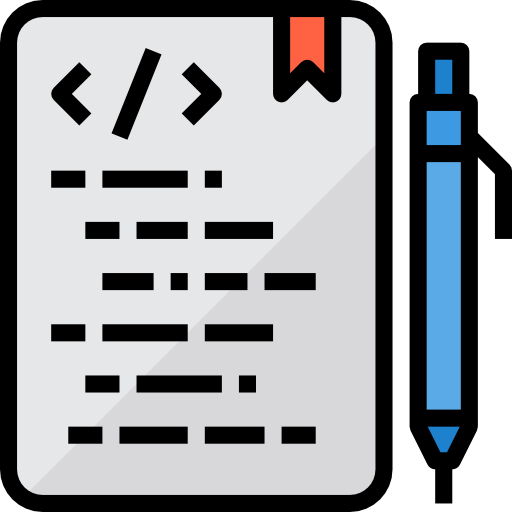

<div class="main-content">
  <article>
    <div class="date">
       {{ page.date | date: "%B %e, %Y" }}
    </div>
    <div class="source">
      <a href={{ page.source }}> {{ page.source_type }} </a> 
    </div>
    <div>
      
      <tr>
        {% for tag in page.tags %}
          {% for tag_type in site.tags %}
            {% if tag == tag_type.name %}
              <td>
                <a href="../tags/{{ tag }}">
                  <span style="color:  {{ tag_type.color }}; background-color: {{ tag_type.bcolor }}; display: inline-block; border-radius: 5px;">
                    {{ tag }}
                  </span>
                </a>
              </td>
            {% endif %}
          {% endfor %}  
        {% endfor %}
        </tr>
    </div>

    <div class="entry">
      {{ content }}
    </div>
  
    {% include disqus.html %}
  </article>
</div>
